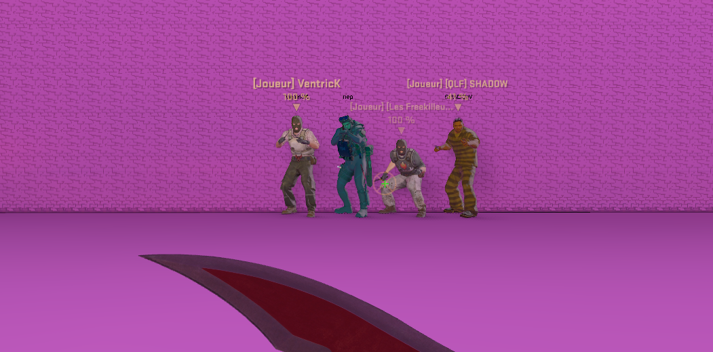

Accueil
Bienvenue sur LaDoc.wiki, une communauté basée sur le BaJail !!!
Le mode BaJail est en fait une simulation de milieu carcéral (prison).
Il y a deux équipes : les Gardiens (CT) et les détenus (T).
Le but des Gardiens est de faire respecter les ordres, de faire faire des activités aux détenus et, si besoin est, d'abattre les rebelles.